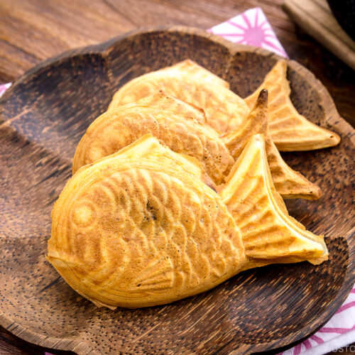

ไทยากิ

ส่วนผสม
⋆ ไข่ เบอร์1 3 ฟอง
⋆ ไข่แดง เบอร์1 1 ฟอง
⋆ น้ำตาล 120 g
⋆ กลิ่นวานิลลา 1 ช้อนชา
⋆ แป้งเค้ก 90 g
⋆ เกลือ 1/8 ช้อนชา
⋆ นม 25 ml
⋆ เนยสดจืด 25 g
วิธีทำ
1) นำไข่ไก่ และน้ำตาลทราย ตีผสมให้เข้ากัน
2) จากนั้นนำไปตั้งไฟ ใช้ไฟอ่อน น้ำในหม้อต้องไม่เดือด แล้วตุ๋นประมาณ 6-7นาที
ให้น้ำตาลละลาย โดยส่วนผสมจะไม่ร้อนจัด อุณหภูมิประมาณ 40องศา
3) เมื่อน้ำตาลละลายแล้วยกลงจากเตา นำเนยใส่ลงไปในนม จากนั้นนำมาตั้งบนหม้อน้ำร้อน
เพื่อให้เนยละลาย ตีไข่ด้วยความเร็วสูงเพื่อให้ขึ้นฟูเล็กน้อย
ใส่วานิลาแล้วตีต่อด้วยความเร็วต่ำเพื่อไล่ฟองอากาศอีก 2นาที
4) จากนั้นใส่แป้งและเกลือที่ร่อนแล้วลงไป ตีด้วยความเร็วต่ำอีก 1นาที
จากนั้นใส่นมและเนยที่เราอุ่นไว้ลงไป ตะล่อมจนส่วนผสมเข้ากัน
4) ทาน้ำมันหรือเนยลงในที่พิมพ์ รอจนเครื่องร้อนจึงตักแป้งใส่ลงไปในพิมพ์
ใช้เวลา 2นาทีขนมก็จึงสุก พร้อมเสิร์ฟ